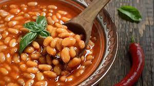

Pasulj

- 600 g Smeđeg graha Podravka
- 60 g Pancete Podravka
- U posudu (tavu) koja može ići u pećnicu na zagrijano ulje stavite narezanu pancetu i kratko popecite.
- Dodajte mrkvu narezanu na ploškice i papriku narezanu na kockice pa zajedno kratko popecite.